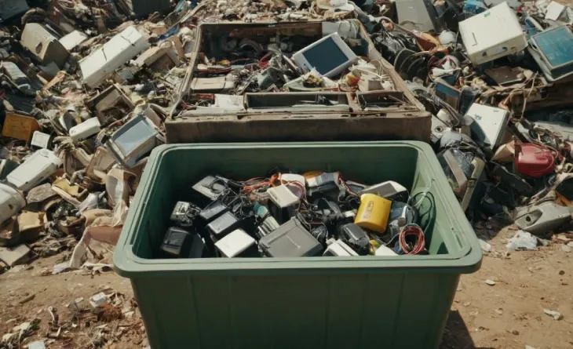
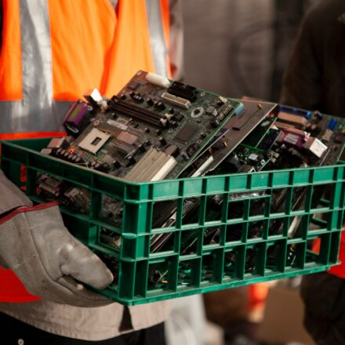

Reduzindo o Lixo Eletrônico
Criando uma economia circular para hardware de TI
O Problema do Lixo Eletrônico
O mundo gera 50 milhões de toneladas de lixo eletrônico anualmente. Apenas 20% é reciclado formalmente.
Impactos Negativos:
- Contaminação do solo e água por metais pesados
- Perda de materiais valiosos como ouro e cobre
- Riscos à saúde dos trabalhadores em reciclagem informal

Estratégias para Reduzir o E-Waste
Reuso
Prolongar a vida útil dos equipamentos
Refabricaçao
Restaurar equipamentos para padrões originais
Reciclagem
Recuperar materiais de forma responsável
Economia Circular na TI
Design Modular
Equipamentos com peças substituíveis e atualizáveis
Modelos de Negócio
Assinatura de hardware e leasing com devolução
Logística Reversa
Sistemas eficientes para coleta de equipamentos usados
Certificação
Parcerias com recicladoras certificadas
Estudo de Caso: Dell e a Economia Circular
A Dell implementou um programa de economia circular com resultados impressionantes:
- Reciclou 2 bilhões de libras de e-waste desde 2008
- Usa plástico reciclado em 125 produtos diferentes
- Meta de usar 100% de materiais reciclados até 2030

Como Implementar na Sua Empresa
Três passos para reduzir o lixo eletrônico:
1
Inventário de equipamentos
2
Parcerias com recicladoras
3
Política de descarte responsável